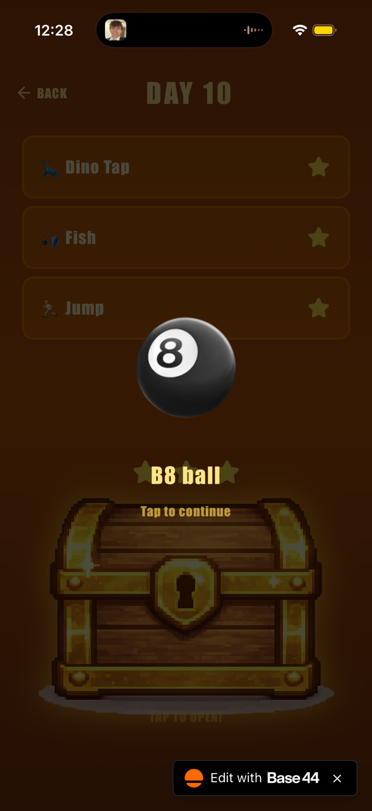

Software project
CompletedApp made with AI
Quest · A private birthday game
Overview
Quest is a private birthday app I created for my girlfriend. Starting on the day I left for Ireland, the three-week experience unlocked a new level each day and introduced five different minigames over time. Music, personal messages, rewards, and hidden Easter eggs made the experience personal.
My contribution
As the sole creator, I defined the game concept, planned the daily progression, and used Base44’s AI development tools to build the app. I translated gameplay ideas into detailed requirements, checked the generated behavior, and independently playtested the experience.
Making daily progression testable
Date-based unlocking was difficult to verify because testing future levels would otherwise mean waiting for each day to arrive. I worked with the AI to add an in-game date setting that could be changed for testing while defaulting to the actual current day.
This let me check progression across the three-week schedule and verify that the intended level became available for each date. Building a way to test the behavior was an important part of making the feature work.
Designing increasing difficulty
With five games introduced across three weeks, manually designing every level would have taken too long. For Jump, a game about navigating obstacles, I worked with the AI to define different obstacle types and layout variations that could support increasing difficulty.
The challenge was being specific about both variety and playability: harder arrangements still needed to leave a possible route through the level. I refined how I described the obstacle behavior and layout constraints so the generated gameplay better matched my intent.
What I learned
The project taught me to communicate with AI through precise technical requirements and to understand its behavior step by step. Breaking features into smaller parts made it easier to assess what the AI could do, identify problems, and explain the changes I needed.
The date setting was a particularly useful lesson: when a feature is difficult to check, designing a practical way to test it can help move development forward.
Outcome
I completed development over one month, from May to June 2026. Quest received positive feedback from my girlfriend, its intended user, and remains private.
Project gallery


